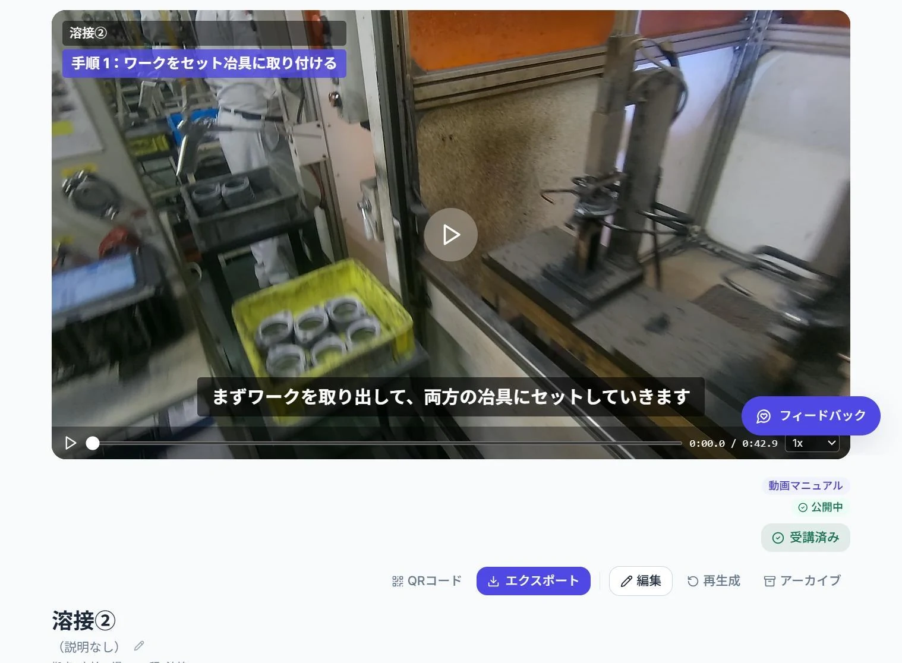
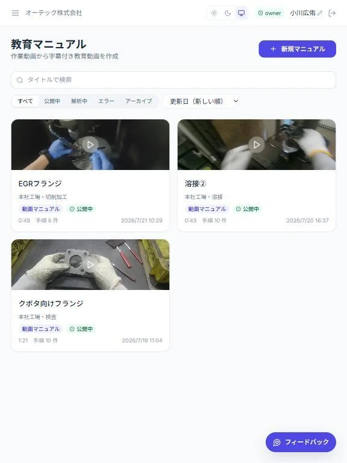
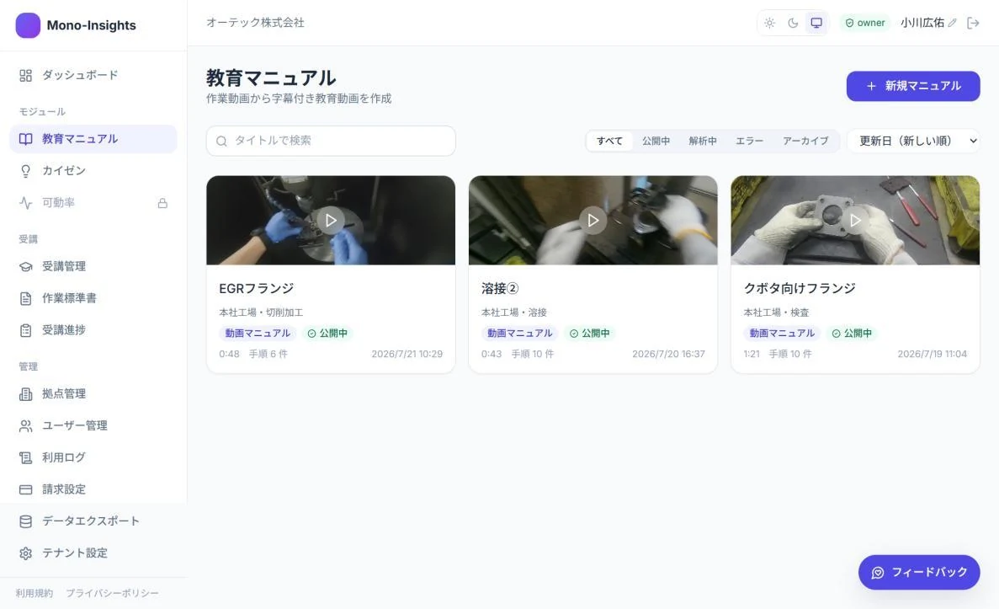
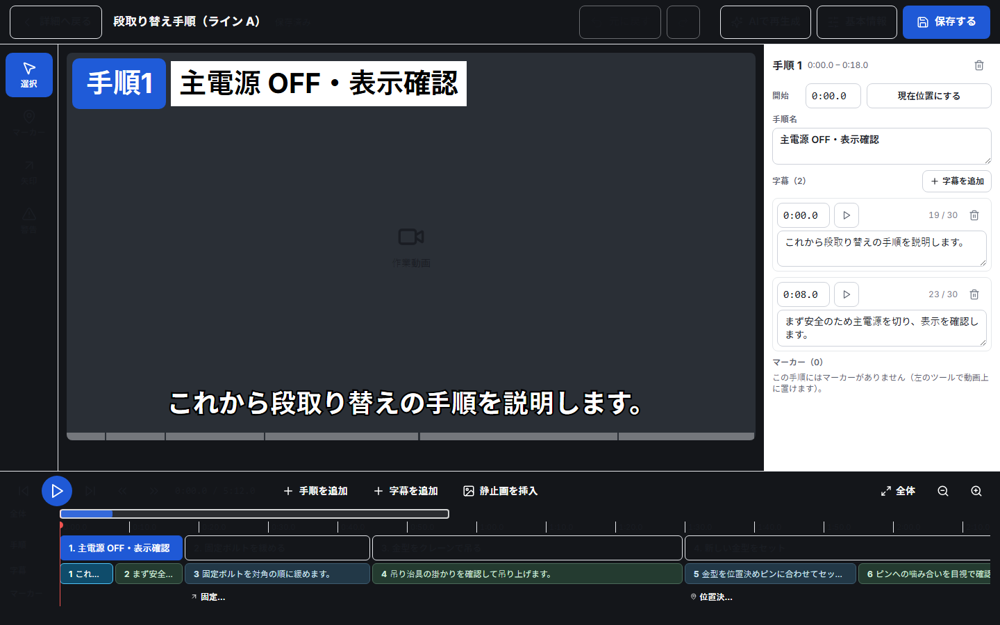
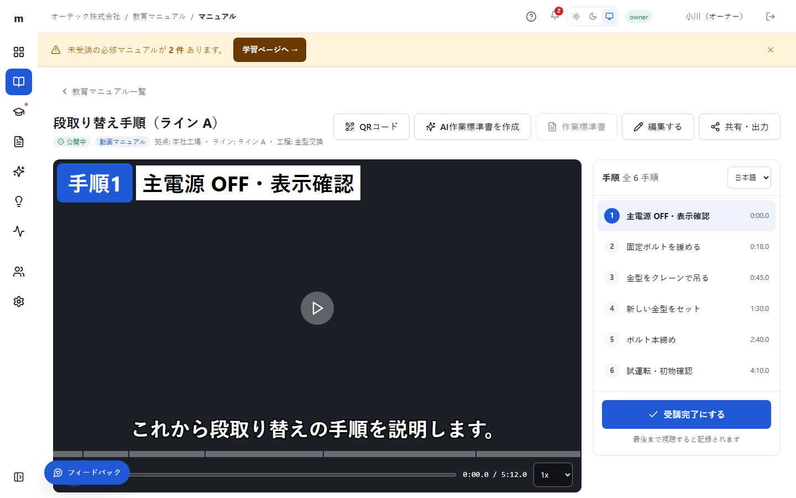

01あの人しか、
あの人しか、
やり方を知らない。
技術継承その技術を、
自動車部品メーカーが、
自社の改善活動のためにつくったAI。
撮った作業動画を、手順・字幕付きのマニュアルへ。
熟練者の「当たり前」を、誰もが学べる会社の資産に。

01作業の切れ目で、手順を自動分割
02標準書に沿った、現場の言葉で出力
03教えるポイントを、急所付きの標準書に



タイムライン上で、手順の切れ目を調整。
再生しながら、使い慣れた現場の言葉へ。
矢印や警告マークで、注意点を強調。
monoインサイトを開発するのは、自動車部品メーカーのオーテック。私たち自身も、技術継承や日々の改善に向き合う現場を持っています。
基準はいつも、「現場で本当に使えるか」。
自分たちの現場で使う視点を、開発に生かしています。
作業標準書は、「何を、どの順番で、何に気をつけて行うか」をまとめた現場の手引きです。
monoインサイトは、動画の手順に品質・安全・作業のポイントを添えて下書きします。

動画とつながった手順をもとに、
作業内容と注意点をまとめます。
作業標準書
安全停止状態を確認してから作業を始める。
品質対角の順に緩める。
作業のポイント吊り具の掛かりを確認する。
手順ごとに動画の時刻も記載。動きを見返したいときの目印に。
順番や条件など、品質を左右する注意点を残します。
作業前の確認や危険な動作など、気をつける点を伝えます。
手順だけでは伝わりにくい、確認箇所や作業のコツを添えます。
AIの下書きを担当者が仕上げ、印刷して作業場に置いたり、教育時の確認に使ったりできます。
動画を編集する。その先の教育と、現場への定着まで。
| 選ぶときの視点 | 動画マニュアル作成ツール | 改善支援ツール | mono インサイト |
|---|---|---|---|
| 主な目的 | 業務手順の動画マニュアル化 | 改善活動の記録・分析 | 現場の教育・技術継承 |
| マニュアルのつくり方 | 動画編集・AI作成支援など | ツール・機能による | AIが手順・字幕を下書き |
| 製造現場への対応 | 対応範囲は製品による | 工程・課題を記録 | 作業標準書の言葉を反映 |
| 教育への展開 | 配信・視聴管理など | ツール・機能による | QR配布・個人別の受講管理 |
| その先の活用 | 動画・マニュアルの共有 | 改善の推進・効果の把握 | 急所付き標準書の作成 改善支援機能も開発中 |
一般的な用途・設計の違いを整理した比較です。特定製品の性能評価ではありません。機能は製品・プランによって異なります。
標準書に沿った手順名・粒度で、使えるマニュアルへ。
品質・安全のポイントを、動画と作業標準書に。
ユーザー数による課金なし。共有端末での受講にも対応。
顔・名札の自動マスキング、国内保管に対応。
記憶を頼りにする前に、
手順を確かめる。
作業観察のその場で、
基準を確認する。
新人・外国籍の方の、
最初の一歩を支える。
間違えやすい急所を、
動画で伝える。
開発中
マニュアルで整えた工程・ライン情報を、次の改善へ。
第一弾は、付帯作業やばらつきを捉えるサイクル分析。
現場の声を伺いながら、開発を進めています。
↗ 作業のばらつきに、気づきを。
ユーザー数で、料金は増えません。
企業の規模に合わせた、4つの料金体系。
現場のお悩みや、試したい
作業をお聞かせください。
利用条件を確認し、
体験環境をご案内します。
作業の概要や標準書も添えて、
AIでマニュアルの下書きを。
内容を確認・修正して、
教育や技術継承に活用。
AIが作業手順や字幕の下書きをつくります。字幕の打ち直しや手順の区切り調整など、直感的な操作で仕上げられます。AIの出力内容は、作業を理解した方による確認・修正が必要です。
トライアルの期間・利用範囲・開始手順は、お申し込みの際にご案内します。まずは試したい作業やご利用のイメージをお聞かせください。トライアルについて相談する
共有端末で名前を選び、視聴する運用に対応しています。誰がいつ視聴・完了したかの記録は、個人ごとに管理できます。
現在は英語への自動翻訳に対応しています。翻訳した手順や安全上の注意点は、現場で確認してからご利用ください。
サービスでは、AI解析前に顔・名札などを自動マスキングし、データを国内の東京リージョンで保管します。通信・保管データは暗号化されます。詳細な適用範囲や運用条件は、導入時にご確認いただけます。
ご契約終了時には、データを標準形式（MP4＋JSON）で無償でお渡しします。データの削除証明書も無償で発行します。
カイゼン機能は現在開発中です。提供時期や内容は、今後ご案内します。このLP内のサイクル分析は、開発中のコンセプトイメージです。